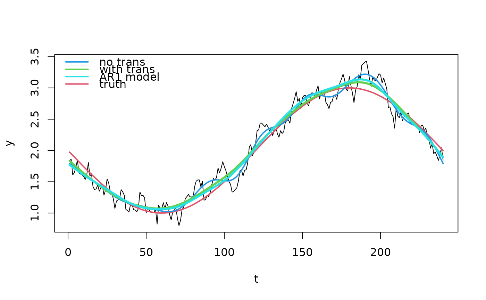

AR1_transform.RdThe transformer function takes a bamlss.frame object and transforms
the response and the design matrices to account for lag 1 autocorrelation. The method
is also known as Prais-Winsten estimation.
trans_AR1(rho = 0.1)
AR1(rho = 0.1)Specifies the correlation parameter at lag 1.
A transformer function which can be used in the bamlss call.
Johnston, John (1972). Econometric Methods (2nd ed.). New York: McGraw-Hill. pp. 259--265.
if (FALSE) ## Simulate AR1 data.
set.seed(111)
n <- 240
d <- data.frame("t" = 1:n)
## Nonlinear function.
f <- function(x) {
2 + sin(x / n * 2 * pi - pi)
}
## Correlated errors.
rho <- 0.8
e <- rnorm(n, sd = 0.1)
u <- c(e[1], rep(NA, n - 1))
for(i in 2:n){
u[i] <- rho * u[i - 1] + e[i]
}
## Response.
d$y <- f(d$t) + u
## Plot time-series data.
plot(d, type = "l")
## Estimate models without and with AR1 transformation.
b0 <- bamlss(y ~ s(t,k=20), data = d, criterion = "BIC")
#> BIC 129.9742 logPost -94.8189 logLik -40.9875 edf 8.7579 eps 0.3929 iteration 1
#> BIC -50.9009 logPost -4.3813 logLik 49.4500 edf 8.7579 eps 0.1802 iteration 2
#> BIC -169.273 logPost 63.6484 logLik 109.8060 edf 9.1848 eps 0.1185 iteration 3
#> BIC -251.328 logPost 104.3241 logLik 160.9521 edf 12.877 eps 0.0892 iteration 4
#> BIC -280.111 logPost 119.3164 logLik 182.7741 edf 15.588 eps 0.0489 iteration 5
#> BIC -283.958 logPost 121.6997 logLik 188.1901 edf 16.863 eps 0.0165 iteration 6
#> BIC -284.137 logPost 121.9224 logLik 189.2760 edf 17.227 eps 0.0025 iteration 7
#> BIC -284.139 logPost 121.9410 logLik 189.4093 edf 17.275 eps 0.0002 iteration 8
#> BIC -284.139 logPost 121.9422 logLik 189.4185 edf 17.278 eps 0.0000 iteration 9
#> BIC -284.139 logPost 121.9422 logLik 189.4185 edf 17.278 eps 0.0000 iteration 9
#> elapsed time: 0.06sec
#> Starting the sampler...
#>
#> | | 0% 1.43sec
#> |* | 5% 1.46sec 0.08sec
#> |** | 10% 1.21sec 0.13sec
#> |*** | 15% 1.12sec 0.20sec
#> |**** | 20% 1.04sec 0.26sec
#> |***** | 25% 0.99sec 0.33sec
#> |****** | 30% 0.92sec 0.39sec
#> |******* | 35% 0.86sec 0.46sec
#> |******** | 40% 0.79sec 0.53sec
#> |********* | 45% 0.72sec 0.59sec
#> |********** | 50% 0.66sec 0.66sec
#> |*********** | 55% 0.59sec 0.72sec
#> |************ | 60% 0.53sec 0.79sec
#> |************* | 65% 0.46sec 0.86sec
#> |************** | 70% 0.40sec 0.92sec
#> |*************** | 75% 0.33sec 0.99sec
#> |**************** | 80% 0.26sec 1.05sec
#> |***************** | 85% 0.20sec 1.12sec
#> |****************** | 90% 0.13sec 1.19sec
#> |******************* | 95% 0.07sec 1.25sec
#> |********************| 100% 0.00sec 1.32sec
b1 <- bamlss(y ~ s(t,k=20), data = d, criterion = "BIC",
transform = AR1(rho = 0.8))
#> BIC 116.5955 logPost -98.7143 logLik -17.6504 edf 14.833 eps 0.4473 iteration 1
#> BIC -191.175 logPost 58.1682 logLik 115.8567 edf 7.3965 eps 0.1827 iteration 2
#> BIC -329.281 logPost 127.2208 logLik 184.9094 edf 7.3965 eps 0.1068 iteration 3
#> BIC -391.472 logPost 158.3164 logLik 216.0050 edf 7.3965 eps 0.0666 iteration 4
#> BIC -402.086 logPost 163.6233 logLik 221.3119 edf 7.3965 eps 0.0288 iteration 5
#> BIC -401.753 logPost 179.2619 logLik 222.0487 edf 7.7262 eps 0.0075 iteration 6
#> BIC -401.754 logPost 179.2625 logLik 222.0492 edf 7.7262 eps 0.0003 iteration 7
#> BIC -401.754 logPost 179.2625 logLik 222.0492 edf 7.7262 eps 0.0000 iteration 8
#> BIC -401.754 logPost 179.2625 logLik 222.0492 edf 7.7262 eps 0.0000 iteration 8
#> elapsed time: 0.09sec
#> Starting the sampler...
#>
#> | | 0% 1.19sec
#> |* | 5% 1.16sec 0.06sec
#> |** | 10% 1.08sec 0.12sec
#> |*** | 15% 1.05sec 0.19sec
#> |**** | 20% 1.00sec 0.25sec
#> |***** | 25% 0.97sec 0.32sec
#> |****** | 30% 0.92sec 0.39sec
#> |******* | 35% 0.86sec 0.46sec
#> |******** | 40% 0.81sec 0.54sec
#> |********* | 45% 0.73sec 0.60sec
#> |********** | 50% 0.67sec 0.67sec
#> |*********** | 55% 0.61sec 0.74sec
#> |************ | 60% 0.54sec 0.80sec
#> |************* | 65% 0.47sec 0.87sec
#> |************** | 70% 0.40sec 0.94sec
#> |*************** | 75% 0.33sec 1.00sec
#> |**************** | 80% 0.27sec 1.07sec
#> |***************** | 85% 0.20sec 1.14sec
#> |****************** | 90% 0.13sec 1.20sec
#> |******************* | 95% 0.07sec 1.27sec
#> |********************| 100% 0.00sec 1.33sec
## Estimate full AR1 model.
b2 <- bamlss(y ~ s(t,k=20), data = d, criterion = "BIC",
family = "AR1")
#> BIC 122.7588 logPost -96.2975 logLik -34.6395 edf 9.7579 eps 0.5953 iteration 1
#> BIC -88.4299 logPost 9.2968 logLik 70.9548 edf 9.7579 eps 0.1684 iteration 2
#> BIC -259.215 logPost 94.6895 logLik 156.3475 edf 9.7579 eps 0.1031 iteration 3
#> BIC -358.316 logPost 144.2403 logLik 205.8983 edf 9.7579 eps 0.0654 iteration 4
#> BIC -385.428 logPost 157.7960 logLik 219.4540 edf 9.7579 eps 0.0342 iteration 5
#> BIC -371.222 logPost 164.0682 logLik 220.9204 edf 12.885 eps 0.0099 iteration 6
#> BIC -371.229 logPost 164.0718 logLik 220.9240 edf 12.885 eps 0.0009 iteration 7
#> BIC -371.229 logPost 164.0718 logLik 220.9240 edf 12.885 eps 0.0002 iteration 8
#> BIC -371.229 logPost 164.0718 logLik 220.9241 edf 12.885 eps 0.0001 iteration 9
#> BIC -371.229 logPost 164.0718 logLik 220.9241 edf 12.885 eps 0.0001 iteration 9
#> elapsed time: 0.14sec
#> Starting the sampler...
#>
#> | | 0% 2.14sec
#> |* | 5% 1.65sec 0.09sec
#> |** | 10% 1.53sec 0.17sec
#> |*** | 15% 1.46sec 0.26sec
#> |**** | 20% 1.40sec 0.35sec
#> |***** | 25% 1.34sec 0.45sec
#> |****** | 30% 1.27sec 0.54sec
#> |******* | 35% 1.19sec 0.64sec
#> |******** | 40% 1.25sec 0.83sec
#> |********* | 45% 1.13sec 0.93sec
#> |********** | 50% 1.02sec 1.02sec
#> |*********** | 55% 0.91sec 1.11sec
#> |************ | 60% 0.80sec 1.20sec
#> |************* | 65% 0.70sec 1.29sec
#> |************** | 70% 0.59sec 1.39sec
#> |*************** | 75% 0.49sec 1.48sec
#> |**************** | 80% 0.39sec 1.57sec
#> |***************** | 85% 0.29sec 1.67sec
#> |****************** | 90% 0.20sec 1.76sec
#> |******************* | 95% 0.10sec 1.85sec
#> |********************| 100% 0.00sec 1.94sec
rho <- predict(b2, model = "rho", type = "parameter")
print(range(rho))
#> [1] 0.7583612 0.7583612
## Estimated standard deviations.
sd0 <- predict(b0, model = "sigma", type = "parameter")
sd1 <- predict(b1, model = "sigma", type = "parameter")
sd2 <- predict(b2, model = "sigma", type = "parameter")
print(round(c(sd0[1], sd1[1], sd2[1]), 2))
#> [1] 0.11 0.00 0.10
## Plot fitted trends.
p0 <- predict(b0, model = "mu")
p1 <- predict(b1, model = "mu")
p2 <- predict(b2, model = "mu")
plot(d, type = "l")
lines(f(d$t) ~ d$t, col = 2, lwd = 2)
lines(p0 ~ d$t, col = 4, lwd = 2)
lines(p1 ~ d$t, col = 3, lwd = 3)
lines(p2 ~ d$t, col = 5, lwd = 3)
legend("topleft",
c("no trans", "with trans", "AR1 model", "truth"),
lwd = 2, col = c(4, 3, 5, 2), bty = "n")
